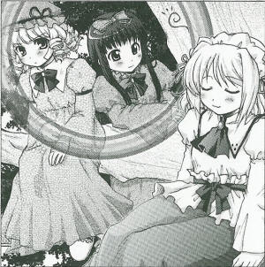
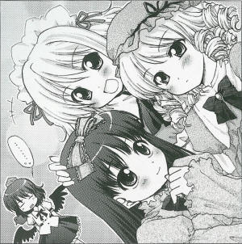

The Strange Reverse Rainbow in the Summer Noon
Though it's long since stopped raining...X month, X day, more than half a day has passed since it stopped raining but a rainbow is visible above the shrine, surprising eye-witnesses.
Moreover the rainbow is no usual rainbow, but the direction of the arc is reversed, so it is doubly surprising as it is a backwards rainbow.
When the shrine maiden who thought it was most suspicious that a rainbow would appear while it wasn't raining went to ascertain the true character of this rainbow, she found out it was the work of three fairies.
The ones who caused all the fuss were Sunny Milk, Luna Child and Star Sapphire (all fairies.)
I asked them for what reason they put forth the rainbow, and how.
Huh? That was Sunny gathering light to heal an injury. To collect light she made it bend, so she made a rainbow around herself. (Star Sapphire)
Really, I'm the one with the nastier injury.... The lightning struck me. Ouchie! Aah, I wonder if it will be night soon. (Luna Child)
What started the incident was when they were flying in the sky during yesterday's thunderstorm, and they received a direct hit from lightning.
Sunny Milk gathered up sunlight to heal the injury, and that was seen as a backwards rainbow.
While in the middle of that healing, Sunny Milk expressed this sentiment.
Ah, it feels good. The other two can't do this, but of course when it's a clear day all I do is sunbathe. I can heal myself in the sunlight. Yesterday I was hurt a little thanks to Star. So now I'm healing up. (Sunny Milk)
Close to Sunny it is strangely radiant, a heat like summer compacted.
It would seem like getting hit by lightning is usual fairy stupidity, but producing a rainbow to heal oneself gives a sense of dynamism not seen in the usual fairies.
Even so, no matter how you look at it Sunny Milk's injuries are minor, but instead the injuries of Luna Child who was with her seem severe.
That might just be because Sunny Milk's treatment just looks like an afternoon nap.
 Sunny Milk
It's hot. Really, it feels like summer.
Aya
It is, isn't it? Did you recover fully from the injury in this case?
Sunny Milk
I'm fine, thank you. I bathed in the sunlight as much as I could to make up for all the time I couldn't during the rainy season.
Luna Child
That's right. I finally recovered too.
Aya
How did Luna Child recover?
Luna Child
I can recover as long as I have at least the moonlight.
Star Sapphire
These two are both weakened when it rains.
Sunny Milk
It's the end of the rainy season so it's no problem now!
Aya
Even so, being hit by a lightning bolt was a disaster for you. If I recall correctly, it was because it struck your umbrella, wasn't it?
Luna Child
That's what I remember! The one who thought to bring one was Star, it's her fault!
Sunny Milk
That's right! Star, you noticed that it looked like lightning was going to strike, didn't you?
Star Sapphire
Huh? What are you saying? Because it was Sunny that insisted we continue with mischief. I was satisfied when we had tricked the one in black.
Luna Child
That's right! It was Sunny's fault! Whenever I have a bitter experience it's usually Sunny's fault.
Sunny Milk
Since it's already summer, that's alright~
Luna Child
That's fine and all, but... Don't I always tell you that? The shrine maiden's intuition is the most dangerous thing for us.
Star Sapphire
But you were done in by lightning.
Aya
Pardon me. I'm not really fully understanding the conversation, could I perhaps have you explain it to me so I can understand?
Sunny Milk
It's good that incident's already over. But it was still interesting, wasn't it?
Star Sapphire
It was.
Luna Child
That's fine and all, but... I'm always the only one who has bitter experiences in the end, right?
Star Sapphire
You're just obtuse.
Sunny Milk
You recovered from it, anyway. Well, why don't we think of our next trick to play soon?
Star Sapphire
Good, good. Such spirit.
Aya
All three of you are totally ignoring me, aren't you?
Luna Child
The next one will go much more smoothly!
Aya
This is why fairies are troubled. They're always only thinking of themselves.
Sunny Milk
What? You'd still like to join in our next prank?
Star Sapphire
That's right. In our trick to completely fool the shrine maiden.
Aya
Continuing these thoughtless pranks without knowing their own abilities. Really you're just like usual fairies, or maybe like that...
Sunny Milk
Well, it's OK, we can do something fun even without borrowing your strength.
Luna Child
Sunny, you can do nothing much all alone.
Sunny Milk
You thought I'd be mad at that? I'm relying on both of your powers.
Star Sapphire
Ufufu. Next we're going to get the shrine maiden completely.
Luna Child
This time we won't fail.
Aya
Come on.... They don't listen to people at all, and I don't really know what they're saying. Is this a fairy garden...?
Profile:
Sunny Milk
Luna Child
Star Sapphire
They're the fairies of sunlight, moonlight, and starlight, respectively.
The three come together to cause mischief.
Appearances:
Touhou Sangetsusei (Serialized now in Comp Ace published by Kadokawa Shoten Publ.)